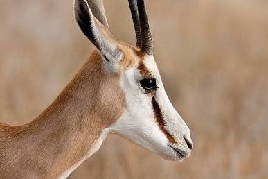
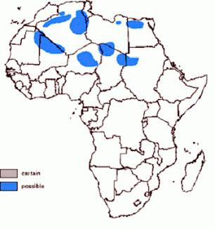
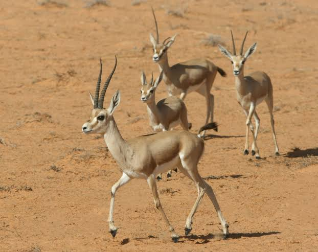
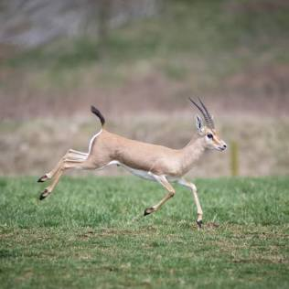
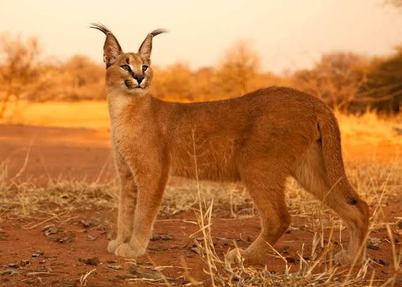

<!DOCTYPE html>
<html lang="en">
<head>
    <meta charset="UTF-8">
    <meta name="viewport" content="width=device-width, initial-scale=1.0">
    <title>Slender Horned Gazelle Dossier</title>
</head>
<body>
    
</body>
</html>

<header>
<h1>Species Page: Slender Horned Gazelle</h1>
</header>

<nav>
    <ul>
<li><a href="african-adventure.html">Home</a></li>
    </ul>
</nav>

<main>
    <article>
        <section id="basic-info">
            <h2>Scientific Information</h2>
            <p><strong>Common Name:</strong> Slender Horned Gazelle (Rhim Gazelle)</p>
            <p><strong>Status/Conservation:</strong> Endangered <sup><a href="#ref1">[1]</a></sup></p>
            <section id="classification">
                <h2>Full Scientific Classification</h2>
                <table border="1">
                    <tr><th>Taxonomic Rank</th><th>Classification</th></tr>
                    <tr><td>Kingdom</td><td>Animalia</td></tr>
                    <tr><td>Phylum</td><td>Chordata</td></tr>
                    <tr><td>Subphylum</td><td>Vertebrata</td></tr>
                    <tr><td>Class</td><td>Mammalia</td></tr>
                    <tr><td>Subclass</td><td>Theria</td></tr>
                    <tr><td>Order</td><td>Artiodactyla</td></tr>
                    <tr><td>Family</td><td>Bovidae</td></tr>
                    <tr><td>Genus</td><td>Gazella</td></tr>
                    <tr><td>Species</td><td>Gazella leptoceros</td></tr>
                </table>
            </section>
         <section id="physical-profile">
            <h2>Physical-profile</h2>
            <dl>
               <dt>Size range</dt>
               <dd> Shoulder height measures 24–28 inches (60–70 cm), with a body length of about 3.3 feet (1 метра). </dd>

               <dt>Weight</dt>
               <dd> Weighs 30–66 lbs (14–30 kg).</dd>
               <dt>Identification Markings</dt>
               <dd>Identification Markings: Very pale, yellowish-white coat designed to reflect sunlight, featuring a distinct white face with faint facial markings and long, slender, gently curved horns possessed by both sexes.  
                <sup><a href="#ref2">[2]</a></sup></dd>
           </dl>
           
       </section>
       <section id="habitat-geography">
        <h2>Habitat & Geography</h2>
        <p>Habitats: Deep desert sand dunes and hyper-arid erg systems.
            Distribution: Native to scattered, isolated regions of the Sahara Desert, including Egypt, Algeria, Tunisia, and Libya.</p>
<h3>Distribution Map</h3>

        </section>
<section id="ecology and behavior">
    <h2>Ecology and Behavior</h2>
<h3>Feeding and Diet</h3>
<p>Browsers and grazers adapted to extreme desert conditions, feeding on grasses, succulent desert plants, leaves, and shoots, obtaining most of their required moisture directly from vegetation.</p>
<ul>
    
</section>
<section id="communication and social behavior">
    <h2>Communication and Social Behavior</h2>
    <p>Living in small, nomadic herds or family groups, they communicate through visual displays, soft vocalizations, and scent marking using preorbital glands.</p>
    
</ol>
<h3>Life Cycle and Breeding Behaviors</h3>
                <p>Females undergo a gestation period of around 5.5 to 6 months, typically giving birth to a single fawn which remains hidden in sand depressions for protection during its first weeks of life.</p>
                
            
            
                <section id="Predators">
    <h2>Predators</h2>
    <p>Desert predators such as desert-adapted jackals, caracals, and large desert owls or hunting cats pose threats to young fawns, while adults rely on incredible speed and camouflage to evade danger.</p>
    
</section>
    </article>
</main>